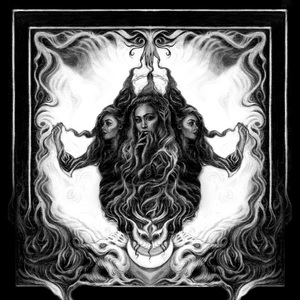
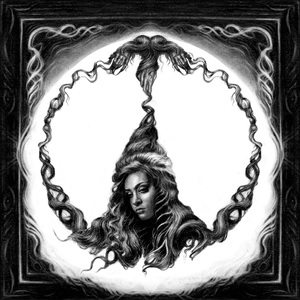
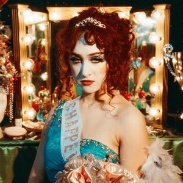

Born Kayleigh Rose Amstutz, Chappell Roan began her musical journey by uploading cover songs to YouTube as a teenager in Willard, Missouri. At just 16, she wrote the original song “Die Young,” which led to a record deal with Atlantic Records when she turned 17. Roan chose her stage name in honor of her late grandfather, Dennis Chappell, inspired by his favorite song, “The Strawberry Roan” by Marty Robbins. Her debut EP, *School Nights*, released in 2017, reflected a “witchy, dark, serious” phase of her life. Shortly after, she relocated to Los Angeles, where she found a new level of personal and professional freedom. “I feel allowed to be who I want to be here,” Roan told Rolling Stone in October 2022, highlighting how living on her own in L.A. transformed her. This freedom and self-discovery were pivotal in the creation of her 2020 single “Pink Pony Club,” which was inspired by her experiences at The Abbey, a gay bar in West Hollywood. While the song eventually gained popularity the following summer, it didn’t bring immediate financial success, leading to Roan’s departure from Atlantic Records.
Chappell Roan was signed to Atlantic Records at just 17 years old, marking a significant milestone in her burgeoning music career. However, after five years with the label, she faced a major setback when Atlantic decided to drop her in 2020. This decision came at a challenging time, as Roan was also struggling to find work in Los Angeles amid the early months of the COVID-19 pandemic. The combination of these difficulties led her to temporarily move back in with her parents. Despite this setback, Roan remained resolute and used the time to regroup and plan her next move. She told Paper Magazine that she gave herself one year to rebuild her career as an independent artist. This period of reflection and determination marked the beginning of Roan’s rebranding. "I was dropped, I was working at a donut shop. No money. That’s what I was doing," she recounted, emphasizing the stark contrast between her previous success and her more humble circumstances at the time.
Undeterred by the challenges, Roan began collaborating with songwriter and producer Daniel Nigro. This partnership proved pivotal, as they worked together to produce new music that resonated with her evolving artistic vision. By May 2022, Roan had released two new singles, “Naked in Manhattan” and “My Kink is Karma.” These tracks, along with their accompanying music videos, marked a significant shift in her career, showcasing a deeper embrace of her queer identity and drag-inspired aesthetic. The projects were self-funded and produced with the help of her friends, reflecting both her creative independence and resourcefulness. Roan’s renewed focus on her music paid off as she actively promoted her new work on social media platforms like TikTok and Instagram. Her engaging presence online helped her build a sizable following and attract attention from other artists. Throughout 2022, she released additional tracks, including “Casual” and “Femininomenon,” further establishing her presence in the music industry. These releases were accompanied by performances where she opened for prominent artists such as Olivia Rodrigo and Fletcher, gaining valuable exposure and reconnecting with her audience. In early 2023, Roan embarked on her headlining Naked in North America tour, which garnered significant attention on social media. This tour was notable for its unique approach: rather than a traditional opening act, Roan featured local drag queens to energize the crowd. Additionally, each night of the tour had a specific theme, influenced by Roan’s songs, encouraging attendees to dress in wigs and costumes that matched the evening’s theme. This interactive and immersive approach not only showcased Roan's distinctive style but also highlighted her commitment to celebrating queer culture and fostering a vibrant, inclusive community around her music.
Nine months after the release of her debut album, The Rise and Fall of a Midwest Princess, Chappell Roan is experiencing remarkable success. Her album recently topped the U.S. iTunes chart, surpassing artists like Taylor Swift and Billie Eilish. With over 20 million monthly listeners on Spotify and standout performances at major festivals like Boston Calling and Governors Ball, Roan is capturing widespread attention. Although her rise seems sudden, Roan has been building her career for nearly a decade, starting with YouTube covers under her birth name, Kayleigh Rose, before rebranding and signing with Atlantic Records in 2017. Despite a challenging period in 2020 when she was dropped by the label, she released Midwest Princess in September 2023 through Amusement Records, receiving critical acclaim and appearing on several best-of-the-year lists. Her solo tour and subsequent opening act for Olivia Rodrigo’s GUTS World Tour in early 2024, along with her Coachella debut, have further propelled her into the spotlight. Roan's catchy, honest music and genuine interaction with fans are key reasons for her growing popularity.
Kayleigh Rose
Before Chappell Roan was signed to Atlantic Records, she released an EP titled Kayleigh Rose under her legal name. Roan Promoted songs on an Instagram and Facebook account called "kayleighrosefan".
1. Die Young 2. Crave You 3. Tell Me Again 4. I Don't Love You
The debut EP album listed under the name Chappell Roan. It was released September 22,2017, through Atlantic Records.
1. Die Young 2. Good Hurt 3. Meantime 4. Sugar High 5. Bad For You
Chappell's first single from 2018, initially intended for her 2018 prooject which was later scrapped
1. Bitter 2. Die Young (Acoustic)
Rise and Fall of a Midwest Princess
The Rise and Fall of a Midwest Princess is the debut studio album by Chappell Roan. It was released September 22,2023, through Amusement Records and Island Records. Roan wrote the album alongside Nigro beginning in 2020.
1. Femininomenon 2. Red Wine Supernova 3. After Midnight 4. Coffee 5. Casual 6. Super Graphic Ultra Modern Girl 7. HOT TO GO! 8. My Kink Is Karma 9. Picture You 10. Kaleidoscope 11. Pink Pony Club 12. Naked in Manhattan 13. California 14. Guilty Pleasure
My name is Kristine Jamelle V. Ignas, and I am 19 years old that is currently in 2nd year college pursuing Bachelor of Science in Information Technology. Earlier this year, I stumbled upon Chappell Roan's music in a way that felt almst serendipitous. While scrolling through TikTok, I came across her song "HOT TO GO!" The track immediately caught my attention with its infectious beat and vibrant energy. As I listened, I was struck by how "HOT TO GO!" reminded me of a song I cherised from my childhood which was "YMCA" by the Village People. Both songs share a lively, catchy spirit that instantly brings a smile to my face. Intrigued by this connection, I decided to explore more of Chappell Roan’s music, and I quickly became captivated by her unique sound and style. What I love most about Chappell Roan’s music is how it combines catchy melodies with a genuine sense of self. Her songs are not only fun and engaging but also carry an authentic emotional depth.
As I delved deeper into Chappell Roan’s work, I became increasingly interested in learning more about her artistry and career. To keep up with her latest news, explore her discography, and engage with her vibrant fan community, I’ve found several fantastic websites that offer valuable insights and updates.